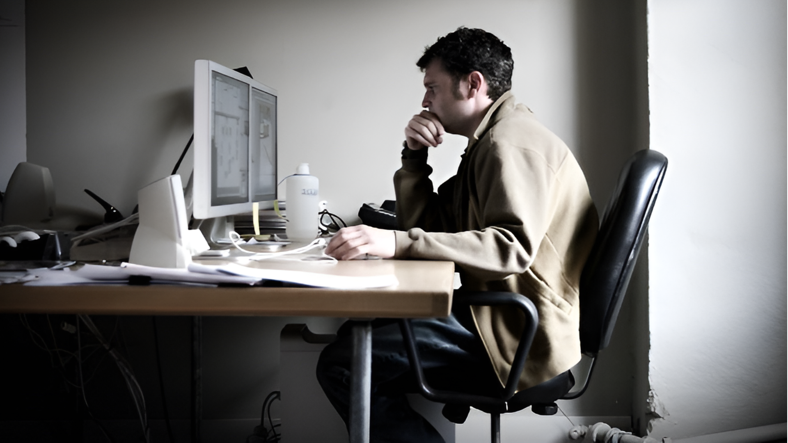

PROBLEMÁTICA
El sedentarismo, resultado de largas horas frente a una pantalla sin actividad física, puede causar graves problemas de salud física y mental. La OMS destaca que el ejercicio regular reduce significativamente el riesgo de enfermedades cardíacas, accidentes cerebrovasculares, diabetes y cáncer. Sin embargo, la mayoría de los adolescentes y adultos no realizan suficiente actividad física.
Un estudio revela que el 23% de los adultos no hace suficiente ejercicio, siendo menos activas las mujeres y los adultos mayores. La encuesta muestra que el 60% de las mujeres se ejercitan al menos 3 veces por semana y el 90% está interesado en dispositivos tecnológicos para mejorar la salud. Ademas, se descubrio que el 75% estaría dispuesto a invertir en dispositivos para mantenerse activo, motivados por logros personales y bienestar. Prefieren productos personalizables, motivacionales y divertidos. Según la fisioterapeuta Rosa Cárdenas, los pedales estacionarios pueden ser útiles para rehabilitación y salud física, pero es crucial usarlos correctamente y adaptar el ejercicio a las necesidades individuales bajo supervisión profesional.
SOLUCIÓN
 Se presenta un pedal estacionario diseñado para jóvenes y adultos, especialmente mujeres de 20 a 30 años que estudian y trabajan. Este producto ofrece un diseño personalizable y versátil, adaptado a las necesidades individuales de quienes buscan mantenerse activos en entornos sedentarios. Los pedales compactos y portátiles permiten ejercitarse mientras se está sentado en casa, en la oficina o en cualquier lugar.
Se presenta un pedal estacionario diseñado para jóvenes y adultos, especialmente mujeres de 20 a 30 años que estudian y trabajan. Este producto ofrece un diseño personalizable y versátil, adaptado a las necesidades individuales de quienes buscan mantenerse activos en entornos sedentarios. Los pedales compactos y portátiles permiten ejercitarse mientras se está sentado en casa, en la oficina o en cualquier lugar.
Destaca por su capacidad para proporcionar asesoramiento personalizado mediante inteligencia artificial, junto con notificaciones inteligentes que motivan y celebran los logros periódicamente. Este enfoque busca marcar la diferencia al promover un estilo de vida más activo y saludable, incluso durante actividades sedentarias como estudiar o trabajar.